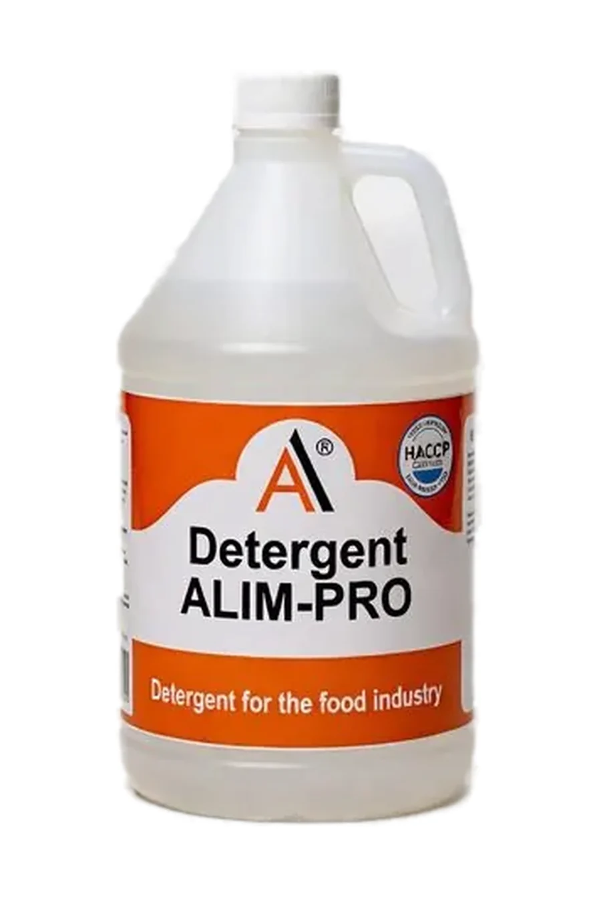

Detergent ALIM-PRO
9,80 € / garrafa 5 L
Detergente desengrasante industrial homologado para contacto alimentario, formulado para eliminar grasas cocidas y residuos orgánicos en cocinas y líneas de producción sin necesidad de aclarado posterior. Compatible con los protocolos HACCP, es la solución habitual de nuestros clientes de restauración colectiva e industria alimentaria que necesitan rapidez sin comprometer la seguridad.
Ver en la tienda HIGIENEX